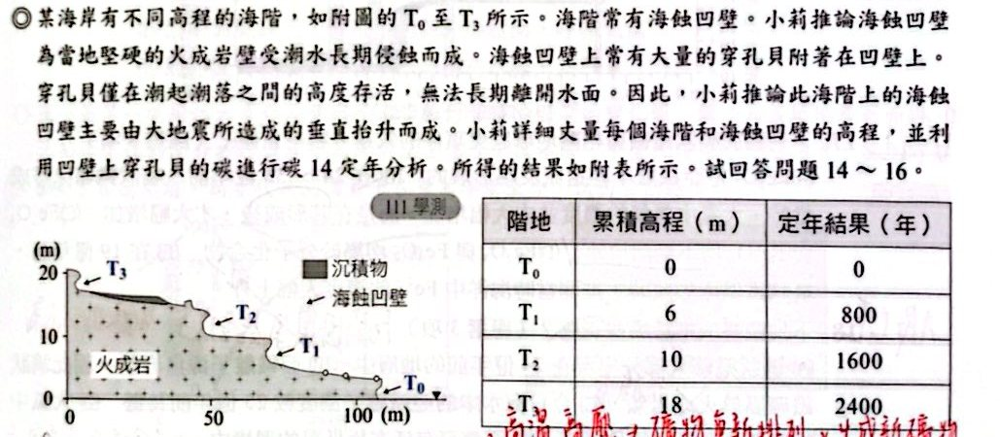
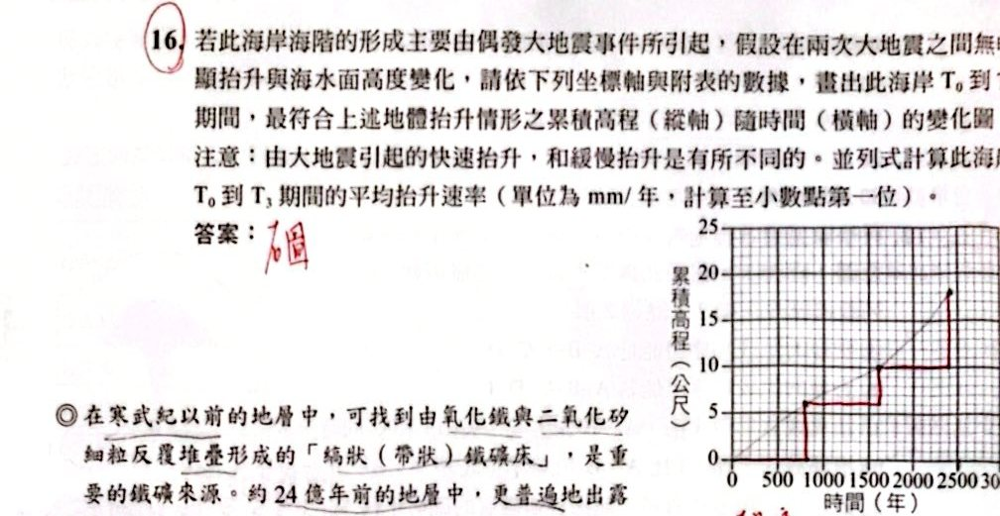
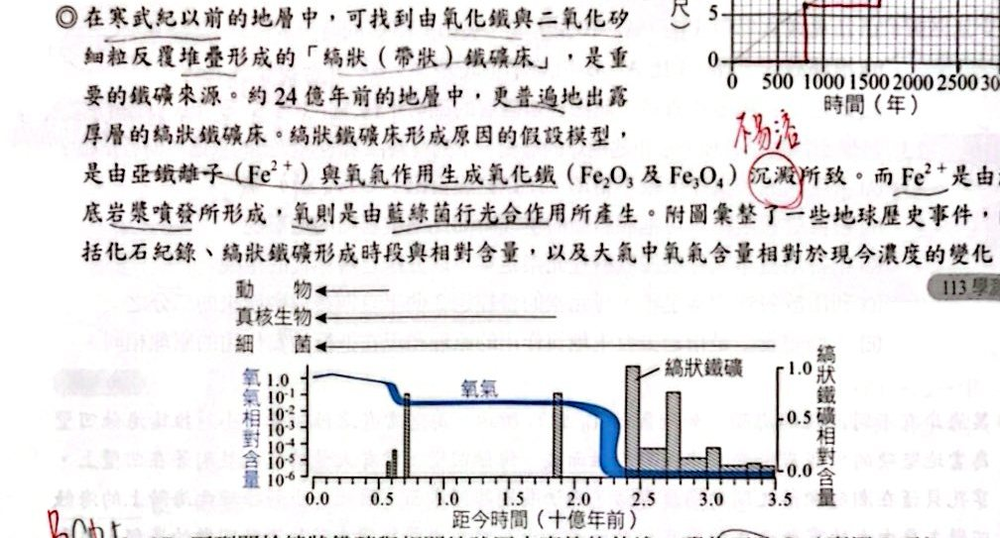
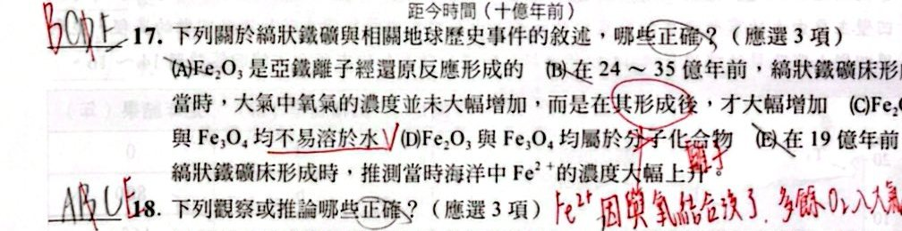
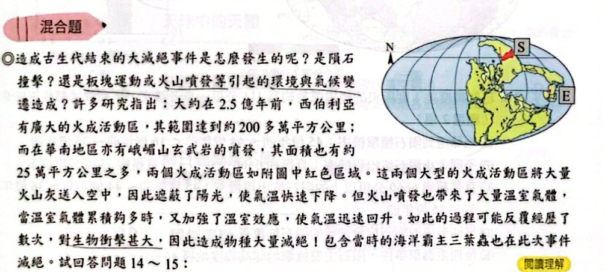
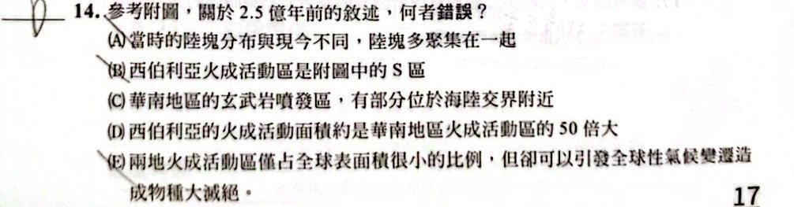
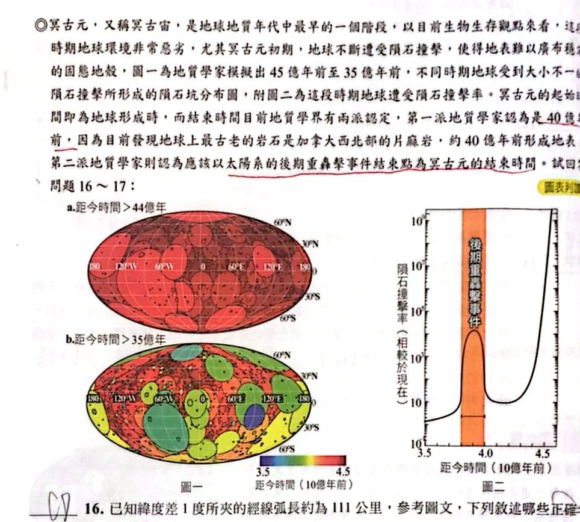
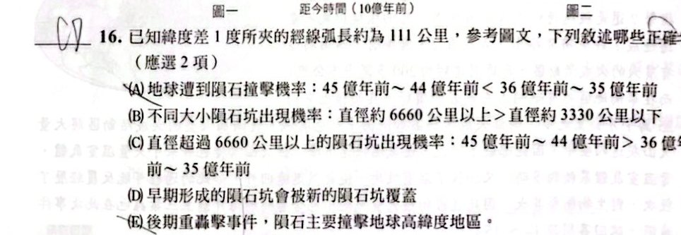
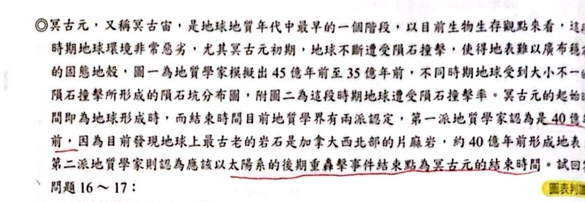
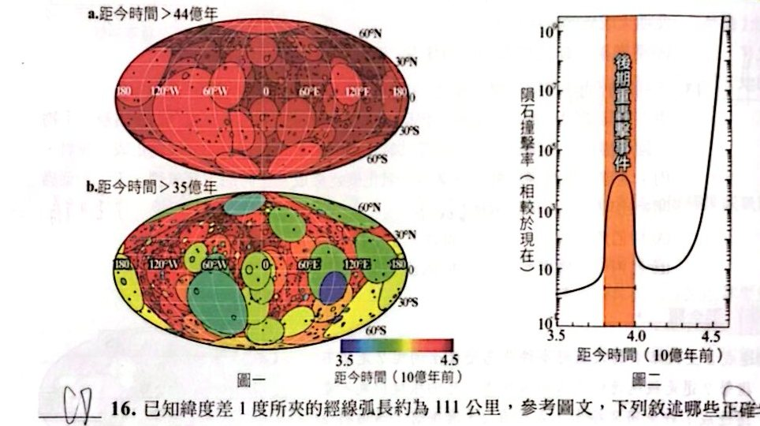

歷屆試題
看答案與詳解收起
答(A) A₁
解這題在考什麼：用「始現／滅絕」夾出一段年代，判斷哪一種化石可有可無。
甲地各化石的生存期限（單位：百萬年前，圖例：人＝始現、Y＝滅絕）：
- A₁：125～0（整段都有） B₂：100～0 C₁：125～65 C₂：65～0 B₁：125～100
乙地有 A₁、B₂、C₁，能對比到甲地的 65～100：
- B₂ 始現於 100 ⇒ 地層年代不會老於 100。
- C₁ 滅絕於 65 ⇒ 地層年代不會新於 65。
- A₁ 的生存期涵蓋整個地層柱，有沒有它都無法縮小範圍，所以可以不出現。
看答案與詳解收起
答(A)
解這題在考什麼：接觸變質、岩脈的種類。
- (A) ○ 鄰近岩脈的岩石，會因岩漿侵入的高溫發生接觸變質作用。
- (C) ✗ 岩脈是岩漿侵入裂縫冷卻形成，屬火成岩，不是沉積岩。
- (B)(D) 需看原圖（侵蝕面先後用截切定律、斷層類型看上盤移動方向）；本題標準答案為 (A)。
看答案與詳解收起
答(C) 第 3 次
解這題在考什麼：讀圖。圖中標示 1～5 次大滅絕，第 3 次（約 2.5 億年前，二疊紀末）降到最低。
看答案與詳解收起
答(C) 古生代
解這題在考什麼：第 3 次大滅絕發生於約 252 百萬年前＝二疊紀末＝古生代結束（三葉蟲等滅絕）。
看答案與詳解收起
答(E) 第 5 次
解這題在考什麼：恐龍、菊石在白堊紀末（約 6600 萬年前）滅絕＝第 5 次大滅絕，也是中生代結束。
看答案與詳解收起
答(C)
解這題在考什麼：大滅絕的定義：很短時間內（幾百萬年）生物總數急遽減少。
- (A) ✗ 滅絕不一定是被更強的競爭者取代造成；三葉蟲滅絕時恐龍根本還沒出現。
- (B) ✗ 從圖看，大滅絕後的回升是緩慢的，也不一定馬上超過前一次的數量。
- (C) ○ 短時間內生物總數急遽減少。
- (D)(E) ✗ 只是持續緩慢減少，或單純減少，都不能稱為大滅絕事件。
看答案與詳解收起
答(D) 辛→己→戊→丙→丁→庚→乙→甲
解這題在考什麼：疊置＋截切＋包裹體定律綜合；題目說「未倒轉」，所以沉積岩下面比上面老。
- 由下而上的沉積岩層：辛→己→戊→…（愈下愈老）。
- 丁是火成岩侵入體，且包裹著丙層的碎塊 ⇒ 丙先形成、丁較晚（包裹體定律）。
- 庚是岩脈，截切了丙、丁、戊、己等下方岩層，所以比它們晚；但它沒有切到上方的乙、甲，所以乙、甲比庚更晚。
- 順序：辛→己→戊→丙→丁→庚→乙→甲，選 (D)。
看答案與詳解收起
答(C) 正斷層
解這題在考什麼：圖中有哪些作用：
- (A) 沉積作用：有，各沉積岩層。
- (B) 侵蝕作用：有，乙層與下方傾斜地層之間為侵蝕面。
- (D) 地層傾斜：有，下方地層傾斜。
- (E) 火成岩侵入：有，丁、庚。
- (C) 正斷層：圖中沒有看到岩層被斷層錯開 ⇒ 沒顯示。
看答案與詳解收起
答(D)
解這題在考什麼：看圖（寬度表示數量）：三葉蟲在古生代，菊石由古生代開始，二疊紀末大減少，三疊紀大量，白堊紀末（中生代結束）滅絕。
- (A) ✗ 三葉蟲在古生代就滅絕，侏羅紀（中生代）海洋沒有三葉蟲。
- (B) ✗ 菊石在白堊紀末滅絕，第三紀（新生代）沒有菊石。
- (C) ✗ 二疊紀末的大滅絕不只促成大型爬蟲類發展，說法過度簡化。
- (D) ○ 菊石從古生代開始發展，古生代晚期曾減少，中生代末期才滅絕。
- (E) ✗ 6500 萬年前不只恐龍，菊石也滅絕。
看答案與詳解收起
答(E) 藍綠菌的出現
解這題在考什麼：氧氣來自光合作用，最早行光合作用的是藍綠菌（約 35 億年前）。
看答案與詳解收起
答(A)(C)(E)
解這題在考什麼：約 40 億年前＝熔融後冷卻，分層、形成海洋與（第二階段）大氣。
- (A) ○ 水氣凝結降雨，海洋形成。
- (B) ✗ 三葉蟲約 5.4 億年前才出現。
- (C) ○ 火山氣體形成（第二階段）大氣層。
- (D) ✗ 大氣中大量氧氣要到約 20 億年前才出現。
- (E) ○ 內部分層成地核、地函、地殼。
看答案與詳解收起
答(B)(E)
解這題在考什麼：深成岩（岩漿在地下深處冷卻）與截切定律。
圖中深成岩 I 由底部向上侵入，穿過砂岩 A、頁岩 B，並把 C、D 向上拱起，但沒有露出地表，所以 I 比 A、B 晚、而且屬深成岩，不是火山。
- (A) ✗ I 在 C 之前形成不合圖意（I 拱起了 C）。
- (B) ○ A→B→C→D→I 是合理順序。
- (C) ✗ I 是深成岩（沒有露出地表），不是火山。
- (D) ✗ 依截切定律，I 截切 A、B，所以 I 比 A、B 晚，不是早。
- (E) ○ 缺乏化石和定年資料，無法判斷岩層的確切（絕對）年代。
看答案與詳解收起
答(E)
解這題在考什麼：均變說、相對 vs 絕對年代、半衰期。
- (A) ✗ 古生代的地質歷史可以用化石與定年重建，並非「錯誤百出」。
- (B) ✗ 岩脈截切周圍地層，依截切定律，岩脈比周圍地層晚。
- (C) ✗ 相對年代是依疊置、截切、化石等；放射性定年才是絕對年代。
- (D) ✗ 經過 2 個半衰期，母元素剩 1/4（1 個半衰期才剩 1/2）。
- (E) ○ 均變說：過去的地質作用原理和現在相同。
看答案與詳解收起
答(C) 變質作用
解這題在考什麼：海蝕凹壁是海浪侵蝕與搬運、風化、地震瞬間抬升的結果；變質作用需高溫高壓使礦物重新排列、生成新礦物，與海蝕凹壁形成關係最小。
看答案與詳解收起
答(A)(B)
解這題在考什麼：碳 14 的性質與定年極限。
- (A) ○ 放射性定年屬絕對地質年代定年法。
- (B) ○ 碳 14 具放射性（會衰變成氮 14）。
- (C) ✗ 半衰期 5730 年，極限約 5.7 萬年，適用於數萬年以內，不是十萬年以上。
- (D) ✗ 母元素含量隨時間呈指數衰減（每個半衰期減半），不是線性。
- (E) ✗ 碳的原子序（質子數）是 6，質量數 14 ⇒ 中子數 8；題目寫成 8 個質子、6 個中子是反的。


看答案與詳解收起
答圖：階梯狀；平均抬升速率 7.5 mm/年
解這題在考什麼：地震造成的是快速（瞬間）抬升，兩次地震之間幾乎不抬升，所以累積高程圖是階梯狀，不是一條斜直線。
- 由表：T₀＝0 m（0 年）、T₁＝6 m（800 年）、T₂＝10 m（1600 年）、T₃＝18 m（2400 年）。
- 畫法：橫軸＝時間（年）、縱軸＝累積高程（m）：在 800 年處垂直升到 6 m，水平維持到 1600 年；1600 年處垂直升到 10 m，水平維持到 2400 年；2400 年處垂直升到 18 m（講義旁手繪的階梯即此）。
- 平均抬升速率＝18 m ÷ 2400 年＝0.0075 m/年＝7.5 mm/年。


看答案與詳解收起
答(B)(C)(E)
解這題在考什麼：帶狀鐵礦＝海中 Fe²⁺＋氧氣 ⇒ 氧化鐵（Fe₂O₃、Fe₃O₄）沉澱；氧氣在鐵礦形成之後才大量進入大氣。
- (A) ✗ Fe²⁺ → Fe₂O₃ 是氧化反應，不是還原。
- (B) ○ 24～35 億年前鐵礦床形成時，氧氣被 Fe²⁺ 消耗，大氣氧濃度未大增；形成之後氧氣才大幅增加。
- (C) ○ Fe₂O₃、Fe₃O₄ 都不易溶於水，才能沉澱。
- (D) ✗ 它們是離子化合物（金屬＋非金屬），不是分子化合物。
- (E) ○ 19 億年前再度形成帶狀鐵礦，表示當時海中 Fe²⁺ 濃度又大幅上升。
看答案與詳解收起
答(A)(C)(E)
解這題在考什麼：看圖：帶狀鐵礦多在 24 億年前以前；氧氣含量不是線性增加。
- (A) ○ 帶狀鐵礦大部分出現在 24 億年前以前的地層（圖中高峰在 24～35 億年前）。
- (B) ✗ 帶狀鐵礦是 Fe²⁺ 與氧氣在水中沉澱形成，屬沉積岩，不是火成岩。
- (C) ○ 25 億年前海中 Fe²⁺ 多（鐵礦大量形成），今日已被氧化消耗，濃度較低。
- (D) ✗ 氧氣含量曲線有階段性變化（約 24 億年前驟增），不是線性增高。
- (E) ○ 細菌（如厭氧菌）可在極低氧環境中存活。
看答案與詳解收起
答(1) 丁→乙→甲→丙 (2) CO₂ 被光合作用消耗而減少，溫室效應減弱，全球氣溫可能下降
解這題在考什麼：氧氣歷史事件順序，以及光合作用對大氣組成的影響。
(1) 由早到晚：
- 丁 帶狀鐵礦床形成（約 35～18 億年前）
- 乙 氧氣在大氣中快速累積（約 24～20 億年前，鐵離子耗盡後）
- 甲 臭氧層形成（氧氣累積之後）
- 丙 生物上陸（約 4 億年前，臭氧層保護之後）
⇒ 丁→乙→甲→丙
(2) 光合作用消耗二氧化碳、釋放氧氣，所以 35～22 億年前大氣中 CO₂ 比例下降；CO₂ 是溫室氣體，減少會使溫室效應減弱，造成全球氣溫降低（甚至引發冰期）。
關鍵考題
看答案與詳解收起
答(C) 水氣、二氧化碳
解這題在考什麼：第二階段大氣（火山活動釋出）：水氣最多、二氧化碳第二多。氫、氦（甲烷、氨）是第一階段（已逸散）；氧氣、臭氧是更晚才出現。
看答案與詳解收起
答(B)(C)(D)
解這題在考什麼：三個熱源：隕石撞擊（動能→熱能）、質量增加向內收縮（位能→熱能）、放射性元素衰變釋放熱能。
- (A) ✗ 溫室氣體吸收太陽輻射不是初期熱能的主要來源。
- (E) ✗ 當時沒有人類與化石燃料。
看答案與詳解收起
答(B)
解這題在考什麼：氧氣逐漸進入大氣，被短波輻射分解再生成臭氧，臭氧層完備後擋住大部分紫外線，生物獲得保護才能上岸（約 4 億年前）。
看答案與詳解收起
答(B) 7 億年
解這題在考什麼：母元素曲線降到 50％ 所需時間＝半衰期。圖一中母元素與子元素曲線交於 50％，對應時間 7 億年。
看答案與詳解收起
答(A) 3 億年前
解這題在考什麼：母：子＝3：1 ⇒ 母元素占 75％，未及一個半衰期（7 億年），所以年代 ＜ 7 億年。
由圖一曲線讀值：母元素 75％ 約在 3 億年，所以選 (A)。
看答案與詳解收起
答(C)
解這題在考什麼：丙（火成岩侵入體）形成於約 3 億年前（古生代）；甲被丙侵入 ⇒ 甲比丙老；乙在最上方，比丙晚。老→年輕：甲→丙→乙。
- (A) ○ 甲比 3 億年前更老，可能是古生代 ⇒ 可能有三葉蟲。
- (B) ○ 乙比 3 億年前新，可以是新生代，可能有長毛象。
- (C) ✗ 甲比 3 億年前更老，而恐龍約 2.5 億年前才出現 ⇒ 甲不可能有恐龍化石。
- (D) ○ 甲、乙、丙有可能都在古生代（5.4～2.5 億年前）。
- (E) ○ 老到年輕為甲→丙→乙。
看答案與詳解收起
答(A) 甲乙丙
解這題在考什麼：每個化石有一段生存期限（圖中直線），兩種以上化石共存的期間才是地層的年代範圍。
圖中各化石生存期：A：寒武～二疊；B：石炭～侏羅；C：泥盆～三疊；D：三疊～白堊；E：三疊～第四紀；F：第三紀。
三地層共存範圍：
- 甲（A、B、C）：共同範圍＝石炭～二疊（古生代晚期）
- 乙（B、D、E）：共同範圍＝三疊～侏羅（中生代）
- 丙（E、F）：共同範圍＝第三紀（新生代）
老到年輕：甲 → 乙 → 丙。
看答案與詳解收起
答(D)(E)
解這題在考什麼：承上題：甲＝石炭～二疊、乙＝三疊～侏羅、丙＝第三紀。
- (A) ✗ 甲有化石 ⇒ 是沉積岩，不可能是花崗岩（火成岩）。
- (B) ✗ 乙是中生代（三疊～侏羅），三葉蟲在古生代就滅絕，不會有。
- (C) ✗ 丙只能是第三紀（F 只存在第三紀），長毛象是第四紀生物，丙不會有。
- (D) ○ 臺灣有古生代、中生代、第三紀等地層，三者都有可能出現在臺灣。
- (E) ○ 甲雖屬古生代，但化石不一定保存或被發現 ⇒ 可能找不到三葉蟲化石。
看答案與詳解收起
答(C)(D)(E)
解這題在考什麼：地球年齡怎麼推、海洋怎麼推、均變說、地層消失。
- (A) ✗ 地球約 46 億年前形成，是從隕石定年推測的；地球上最古老的岩石只有約 40 億年（岩石易消失）。
- (B) ✗ 老於 2 億年的海洋地殼會在海溝隱沒入地函；海洋形成時間是從最古老的沉積岩推知。
- (C) ○ 35 億年前的疊層石（藍綠菌與泥砂形成）⇒ 當時已有能把 CO₂ 轉換成氧氣的生物。
- (D) ○ 均變說：支配今日地球的原理過去也同樣適用。
- (E) ○ 受內外營力作用，許多古老地層消失，探索歷史更困難。
看答案與詳解收起
答(B)
解這題在考什麼：認曲線：甲＝二氧化碳（起始最高、下降）、乙＝氮氣（上升後維持約 78％）、丙＝氧氣（約 20 億年前才升起）。
- (A) ✗ 甲是二氧化碳、乙是氮氣。
- (B) ○ 地球降溫 ⇒ 水氣凝結成液態水 ⇒ CO₂ 溶入水中 ⇒ 大氣中比例下降。
- (C) ✗ 氮氣比例上升，主要是因為其他氣體（水氣、CO₂）被移除；不是靠脫氮作用大量增加。
- (D) ✗ 氧氣增加主要來自光合作用，不是岩石風化。
- (E) ✗ 火山不會釋放大量氧氣（丙）；火山氣體主要是水氣與 CO₂。
看答案與詳解收起
答(D)
解這題在考什麼：地球初期熔融，重力分層：密度大的鐵、鎳下沉成地核，輕的矽鋁質浮上成地殼。
- (A)(B)(C)(E) 錯在把原因歸給「引力吸附」「核融合」「岩壓」「太陽風」，都不是地球分層的原因。
- (D) ○ 原始地球受隕石撞擊、放射性元素衰變而呈熔融狀態，重力讓密度大的鐵、鎳下沉、密度小的矽鋁質上浮。
看答案與詳解收起
答(A) 甲樣本
解這題在考什麼：鉀 40 半衰期 12.5 億年；25 億年前＝2 個半衰期 ⇒ 母元素（⁴⁰K）剩 (1/2)²＝25％。圖中縱軸為 ⁴⁰K 含量百分比，甲樣本＝25％。
看答案與詳解收起
答(B) 丙乙丁甲戊
解這題在考什麼：事件的時間點：
- 丙：熔融、水氣與 CO₂ 為主（約 46～40 億年前）
- 乙：海洋形成、CO₂ 溶於水、形成石灰岩（約 40 億年前）
- 丁：三葉蟲開始出現（約 5.4 億年前）
- 甲：臭氧層逐漸形成、生物上陸（約 4 億年前）
- 戊：菊石滅絕（6600 萬年前）
由早到晚：丙→乙→丁→甲→戊。


看答案與詳解收起
答(D)
解這題在考什麼：閱讀題＋讀圖。
- (A) ○ 2.5 億年前陸塊多聚在一起（盤古大陸）。
- (B) ○ 西伯利亞在北方高緯度，圖中是 S 區。
- (C) ○ 華南的峨嵋山玄武岩有部分位在海陸交界附近。
- (D) ✗ 西伯利亞約 200 多萬 km²，華南約 25 萬 km²，大約是 8 倍，不是 50 倍。
- (E) ○ 兩個火成活動區只占全球很小比例，卻能引發全球氣候變遷與大滅絕。
看答案與詳解收起
答岩石圈、大氣圈、水圈、生物圈四個子系統都互相影響
解這題在考什麼：地球系統的交互作用。
火成活動（岩石圈）噴出火山灰與溫室氣體 ⇒ 大氣圈遮蔽陽光使氣溫先下降、溫室氣體累積後再升溫 ⇒ 氣候劇變影響水圈（海溫、海洋酸化、缺氧）⇒ 生物圈物種大量滅絕。所以岩石圈、大氣圈、水圈、生物圈全都參與。


看答案與詳解收起
答(C)(D)
解這題在考什麼：圖表判讀：圖一為隕石坑分布（愈早愈密、坑愈大）、圖二為撞擊率（愈早愈高，中間有「後期重轟擊事件」）。
- (A) ✗ 45～44 億年前的撞擊機率高於 36～35 億年前（撞擊率隨時間遞減）。
- (B) ✗ 一般而言大隕石坑出現機率比小坑低。
- (C) ○ 直徑超過 6660 公里的大坑，45～44 億年前的出現機率比 36～35 億年前高。
- (D) ○ 早期形成的坑會被後來形成的新坑覆蓋（圖一 b 可見）。
- (E) ✗ 圖中看不出隕石主要撞擊高緯度地區；撞擊在全球各處。


看答案與詳解收起
答約 38 億年前
解這題在考什麼：第二派＝以「後期重轟擊事件的結束點」為冥古元的結束。由圖二，後期重轟擊事件（橘色帶）結束於約 3.8（×10 億年）＝38 億年前。